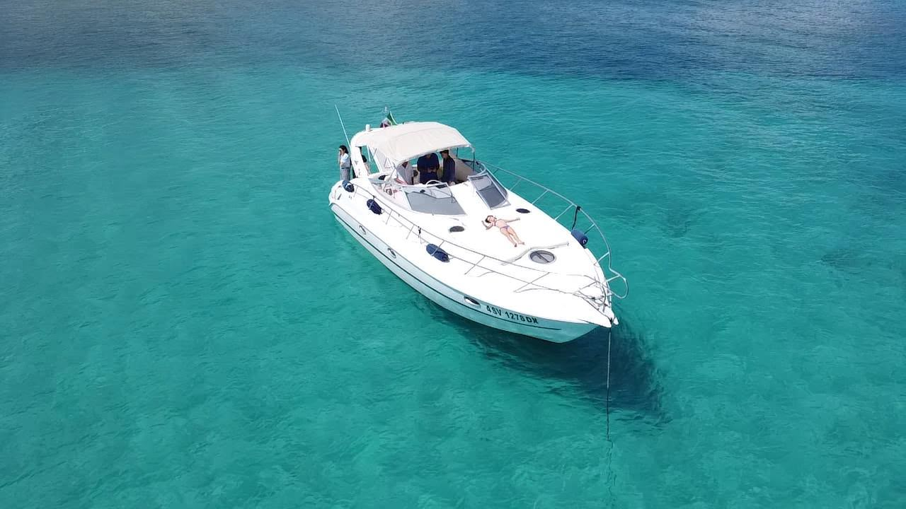
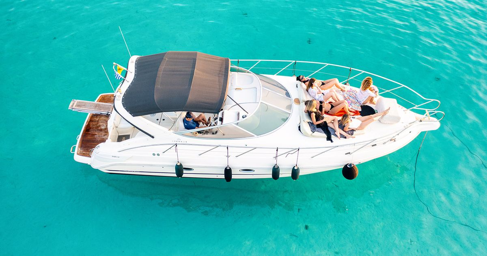
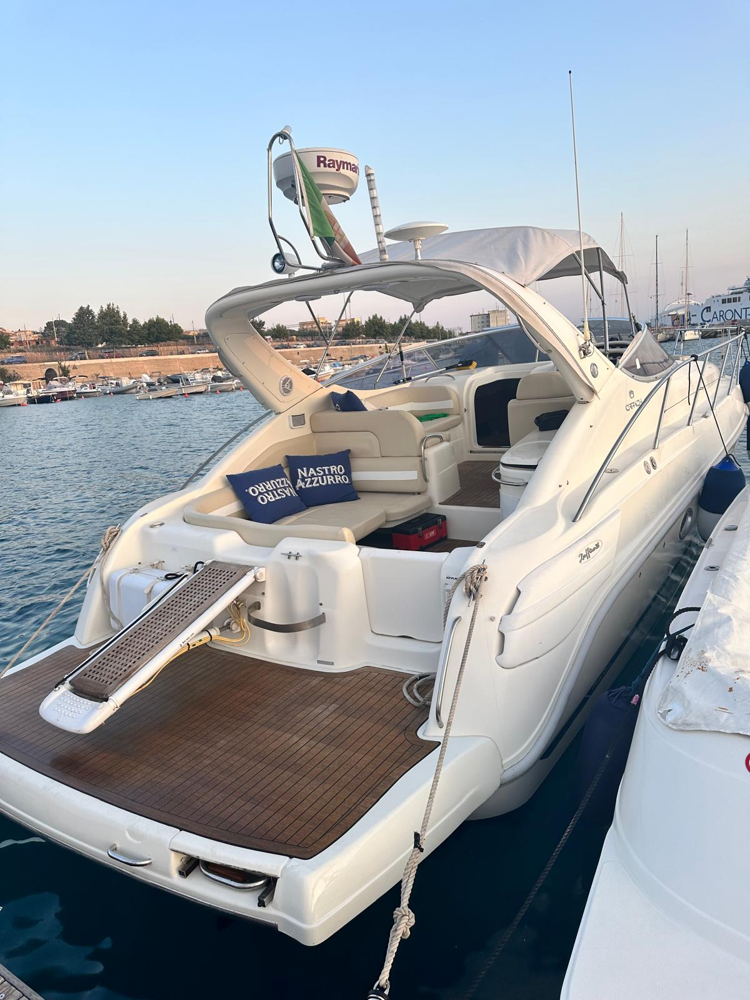
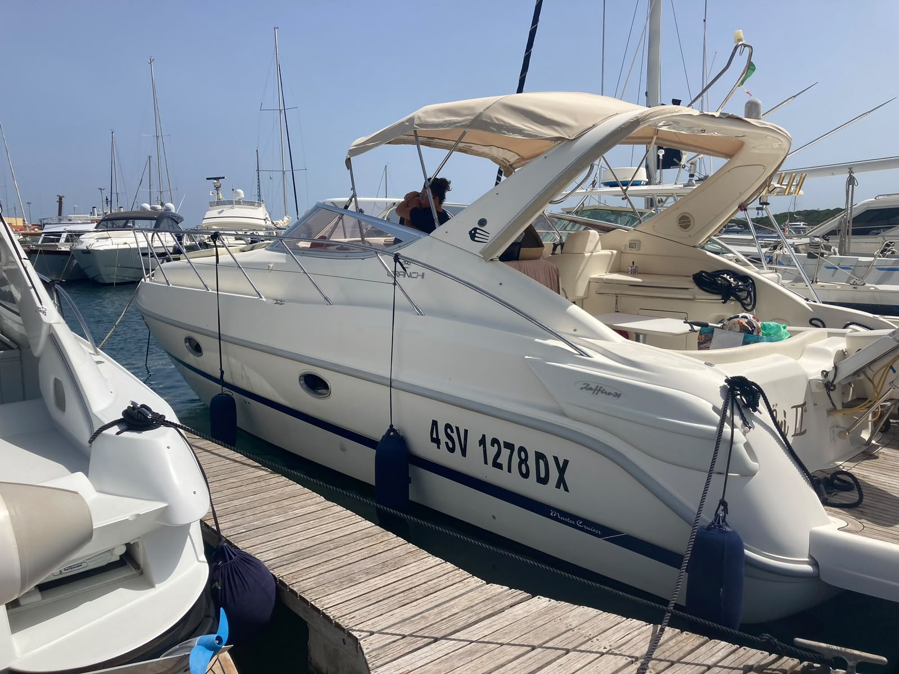

La nostra imbarcazione
Un Cranchi Zaffiro 34: linee eleganti, ponte prendisole ampio e la stabilità ottimale per godersi il mare della Costa Smeralda in totale comodità. Una barca ideale per famiglie, coppie e gruppi di amici.

Cri Cri II Il motoryacht perfetto per le caletteIl modello
Il Cranchi Zaffiro 34 è un rinomato motoryacht del cantiere italiano, progettato per offrire il massimo comfort nella crociera costiera. Lo scafo garantisce un'eccellente navigabilità, mentre le ampie zone esterne invitano a prendere il sole a prua o a rilassarsi comodamente seduti nell'accogliente pozzetto a poppa.
Dotata anche di un'elegante cabina sottocoperta, ideale per rinfrescarsi, appoggiare gli effetti personali o cambiarsi durante la giornata, la Cri Cri II unisce il comfort di un'imbarcazione impeccabile a una gestione attenta, pensata per regalarvi il massimo della spensieratezza e del servizio in mare.
A bordo

Esterni Comodo prendisole di prua
Pozzetto Ampia area relax e pranzo
Design Linee eleganti e sportiveEquipaggio
Su ogni nostra escursione garantiamo un servizio di primissimo livello grazie alla presenza di due membri dell'equipaggio: lo skipper che assicura una navigazione sicura e fluida, e un assistente dedicato interamente agli ospiti. Il nostro obiettivo è fare in modo che non dobbiate mai preoccuparvi di nulla.
Durante tutta la durata dell'uscita, avrete a disposizione un'ampia fornitura di acqua fresca, soft drink e una selezione curata di bevande, senza alcun costo aggiuntivo.
Possiamo riservare per voi i tavoli più esclusivi nei ristoranti de La Maddalena, o coordinare l'arrivo direttamente a bordo di eccellenti crudité o sushi.
Comodità assoluta
Offriamo la massima flessibilità: veniamo a prendervi direttamente nel porto più vicino a voi. Il servizio di pick-up è attivo per Porto Cervo, Poltu Quatu e in tutte le marine più importanti della costa. Comunicateci le vostre esigenze in fase di prenotazione.
Prenota il tuo charter